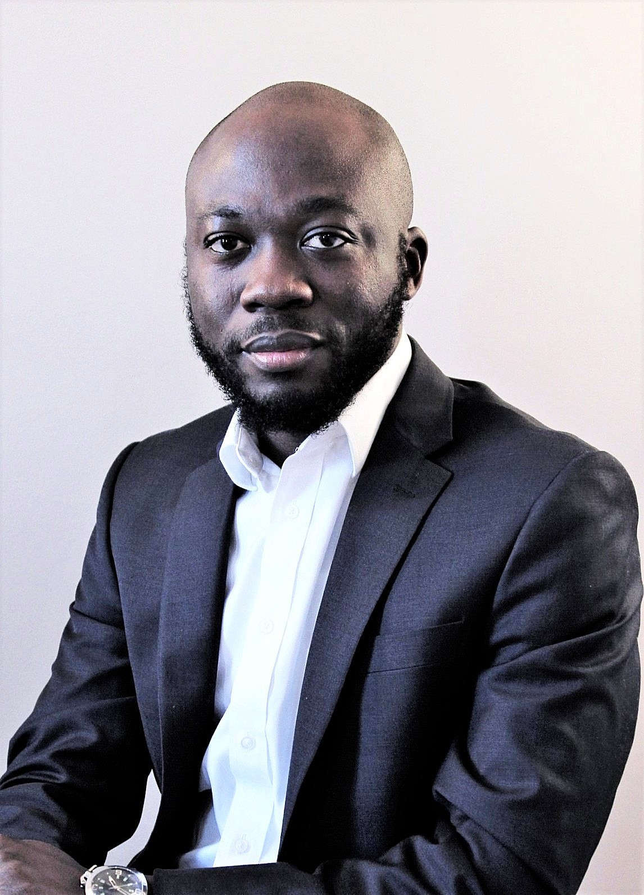

Econometrics | Causal Inference | Applied Microeconomics
I am an Assistant Professor of Economics at the University of Alabama’s Culverhouse College of Business.
My research is in econometrics, with interests in causal inference, estimation and inference, hypothesis testing, and machine learning. I develop methods that help researchers make more credible empirical claims, especially in settings with complex data, weak identifying assumptions, and challenging inference problems. My work combines theory with applied questions in economics and related fields.

Emmanuel S. Tsyawo
Assistant Professor of
Economics
Culverhouse College of Business, University of Alabama
Email: estsyawo [at] gmail.com
GitHub